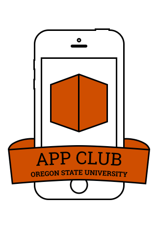
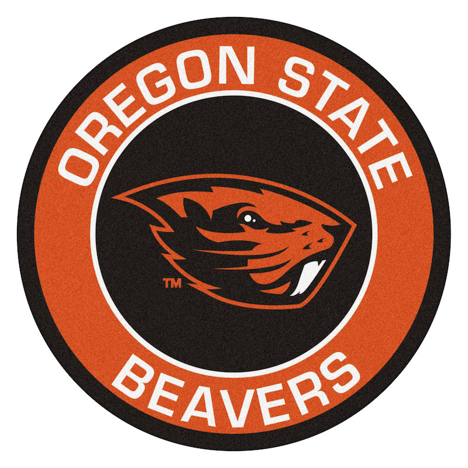

<!DOCTYPE html >
<html lang="en">

</html>

<head>
    <meta charset="UTF-8" />
    <meta name="viewport" content="width=device-width, user-scalable=no, initial-scale=1.0, maximum-scale=1.0, minimum-scale=1.0">
    <link href="https://fonts.googleapis.com/css?family=Gudea:400,700" rel="stylesheet" />
    <title>Companion Clubs</title>
    <link rel="stylesheet" href="clubs.css">
    <script type="text/javascript" src="currentPage.js"></script>
</head>

<body>
    <nav>
        <p>OSU ACM</p>
        <div class="links">
            <a href="index.html">home</a>
            <a href="constitution.html">constitution</a>
            <a href="officers.html">officers</a>
            <a href="clubs.html">companion clubs</a>
        </div>
    </nav>
    

    <div class="content">
        <div class="clubsBox">
            <div class="imgBox"></div>
            <div class="text">
                <h3>Linux Users Group:<br>Tuesdays 6pm KEC 1007</h3>
                <p>The Linux Users Group (LUG) has been a long established OSU CS group. The CS program at OSU is closely involved with Linux, all of CS servers run on linux, and a large part of our curriculum focuses on the inner workings of Linux. OSU
                    has a department called the OSL (Open Source Lab) dedicated to working on and improving open source technology. For that reason, we have many people that are interested and passionate about Linux and open source software. LUG meets
                    every week and generally spends the hour beginning with a talk or activity, and then spending the rest of the time hanging out. If you would like to know more about Linux, CS, computers, open source software, or you want to get Linux
                    installed on your computer, feel free to come on by.</p>
                <table>
                    <tr>
                        <td>Website:</td>
                        <td> <a href="http://lug.oregonstate.edu">http://lug.oregonstate.edu</a></td>
                    </tr>
                    <tr>
                        <td>Mailing list:</td>
                        <td> <a href="http://lists.oregonstate.edu/mailman/listinfo/linux">mailman/listinfo/linux</a></td>
                    </tr>
                </table>
            </div>
        </div>
        <div class="clubsBox">
            <div class="imgBox"></div>
            <div class="text">
                <h3>App Development Club:<br>Wednesdays 6pm KEC 1005</h3>
                <p>The App Development Club has existed as a club focusing on the more popular and cutting edge technologies for developing applications. We have people that specialize in IOS and web development, as well as some people that have worked on
                    developing Android applications. The club functions as a workshop, giving you time to work on an app and being able to get assistance from other people in the club. If you would like to learn about app development, need some help developing,
                    or want to make some new friends, please come by the App Club. The App Club is small and needs some new members to continue to exist, so new people are especially encouraged.</p>
                <table>
                    <tr>
                        <td>Website:</td>
                        <td> <a href="http://osuapp.club">http://osuapp.club</a></td>
                    </tr>
                </table>
            </div>
        </div>
        <div class="clubsBox">
            <div class="imgBox"></div>
            <div class="text">
                <h3>Association of Computing Machinery Womens Chapter:<br>Wednesdays 5:30pm KEC 1007</h3>
                <p>ACM is an organization that spans the nation. This is the OSU branch of the club, and being a part of a large organization gives the club many options and a good reputation. This allows them to get guest speakers from tech companies from
                    all over the state. In addition to the guest talks, there is frequent availability of pizza for club meetings, and training for the yearly ICPC coding competition.</p>
                    <p>This is a recently created subgroup of ACM specifically for supporting women in computer science and electrical engineering, though all are welcome to join and participate.</p>
            </div>
        </div>
    </div>
</body>
